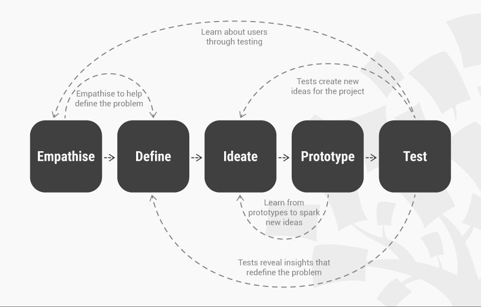
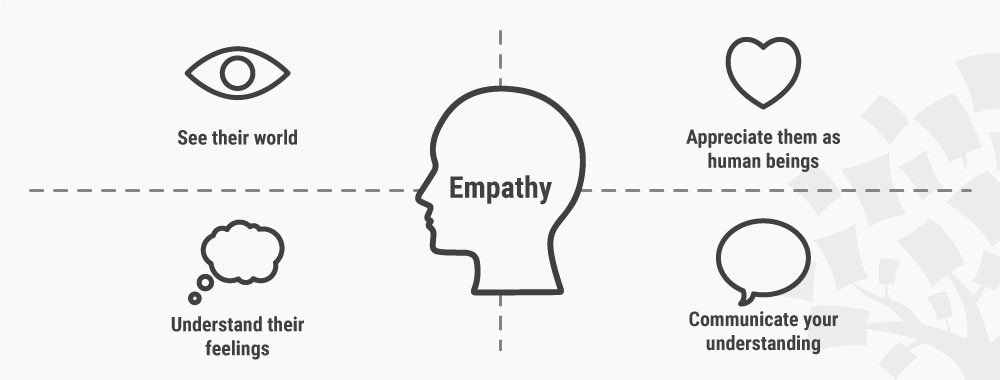
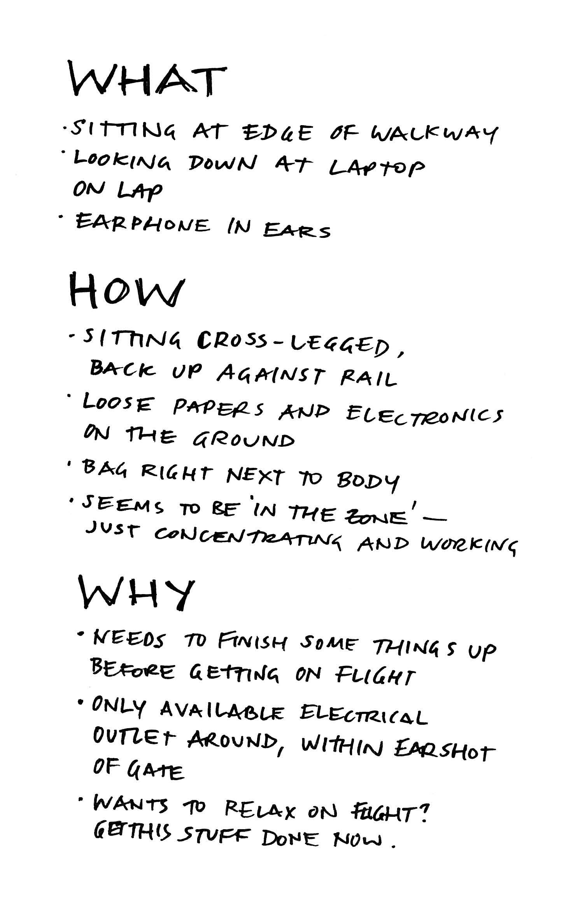
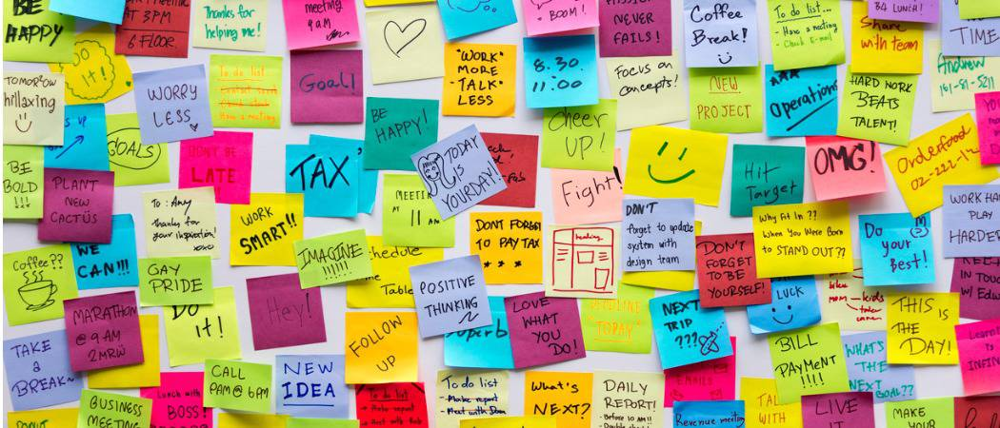

FRONT-END DESIGN FOR
PoPS
with design thinking
with design thinking
Center for geospatial analytics | 9.05.2018
Aim and agenda
-
Aim: Designing the user interface and visualization dashboard for PoPS model
-
Agenda
- intro to design thinking
- define problems
- ideate session 1
- break
- ideate session 2
Design Thinking
Design Thinking is a design methodology that provides a solution-based approach to solving problems. It’s extremely useful in tackling complex problems that are ill-defined or unknown , by understanding the human needs involved, by re-framing the problem in human-centric ways, by creating many ideas in brainstorming sessions , and by adopting a hands-on approach in prototyping and testing. .
five steps in design thinking
Empathize
Empathy is when you can feel what another person is feeling. Empathy is the foundation of a human centered design process; by deeply understanding people we are better able to design for them.
Empathize
- Assuming a Beginner’s Mindset
- Ask What? How? Why?
- Photo and Video User-based Studies
- Personal Photo and Video Journals
- Interviews
- Engaging with Extreme Users
- Bodystorming
What? How? Why?
- What is the person you’re observing doing in a particular situation? (objective)
- How is he doing it? Does it require effort? Does he appear rushed? Pained? Happy? Is the activity impacting the user in either positive or negative way?
- Why is he doing what he’s doing, in the way he’s doing it? (informed guess)
Define
- Analysis of observations and their synthesys to define the core problems that identified in empathy step.
- Problem are defined in a form of problem statements in a human-centred manner.
Define problem
- Human-centred
- is about the people the team is trying to help
- is not about technology, monetary returns or product specifications.
- Broad enough for creative freedom
- e.g. no technical requirements
- Narrow enough to make it manageable
- "improve human condition" is overly broad
Define Problem
[User . . . (descriptive)] needs [need . . . (verb)] because [insight. . . (compelling)]- Examples
- I am a stakeholder and I need more info on how the simulation works because I don’t have any GIS background and I don’t trust computers
- I am a scientist and I need to quickly access the model in my computer because I don’t have Tangible Landscape in my office / I dont have time.
- I am a potential PhD applicant and I want to know what PoPs project is all about because I want to learn about the projects done at CGA
Define Problem
45:00
[User . . . (descriptive)] needs [need . . . (verb)] because [insight. . . (compelling)]
Ideate
Brainstorm | Braindump| Brainwrite | Brainwalk | Challenge Assumptions | SCAMPER| Mindmap | Sketch or Sketchstorm| Storyboard | Analogies | Provocation | Movement | Bodystorm | Gamestorming | Cheatstorm | Crowdstorm | Co-Creation Workshops | Prototype | Creative Pause |ideate
- One HMW at a time
- One conversation at a time
- Defer judgement or criticism (including non-verbal)
- Come up with weird, wacky and wild ideas
- Aim for quantity
- Build on each others' ideas
- Be visual
Brainstorm
- One HMW at a time
- One conversation at a time
- Defer judgement or criticism (including non-verbal)
- Come up with weird, wacky and wild ideas
- Aim for quantity
- Build on each others' ideas
- Be visual
four categories method